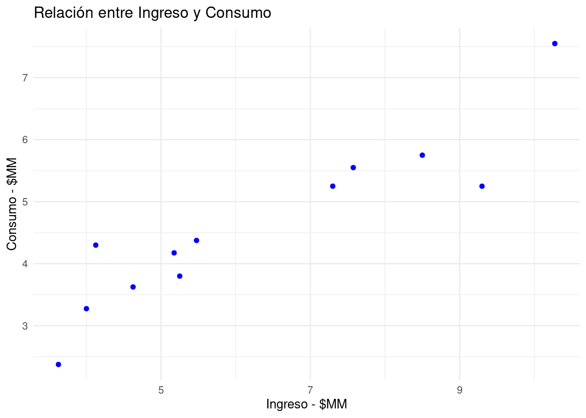

El modelo de regresión lineal es una herramienta estadística que permite modelar la relación que puede exitir entre una variables dependiente (Y) y una o varias variables independientes (\(X_1, X_2, X_3, \dots, X_k\)). Pero tambien el de estimar el valor de variable dependiente a partir de los valores de las variables independientes.
La siguiente función representa la estructura del modelo de regresión lineal múltiple, en el que hay una variable dependiente (\(Y\)) y \(k\) variables independiente (\(X_i\)), mas una variable aleatoria \(u\)
\[ Y = \beta_{0} + \beta_{1} X_{1} + \beta_{2} X_2 + \dots + \beta_{k} X_{k} + u \]
Donde :
Para encontrar los valores de los coeficientes se emplea el métodos de optimización matemática Mínomos Cuadrados Ordinarios MCO. Este metodo encuentra los valores de los coeficientes que minimiza la suma de cuadrado de los errores :
\[ \min \sum_{i=1}^{n} u^{2}_{i} \]
Objetivos:
\[ Y = \beta_{0} + \beta_{1} X_{1} + u \]
Se denomina simple al tener solo una variable independiente y requiere del cumplimiento de supuestos sobre la variable no observable \(u\)
En caso del incumplimiento de los anteriores supuestos se pueden realizar transformaciones en las metricas de las variables (ej. log(X)) para reducir su efecto sobre la estimación de los coeficientes.
Con el fin de estimar la relación que existe entre el nivel de ingresos de una persona y el nivel de su consumo un investigador recolecto el siguiente grupo de datos.
| hogar | ingreso | consumo |
|---|---|---|
| 1 | 62.25 | 42.00 |
| 2 | 32.75 | 22.75 |
| 3 | 79.50 | 39.00 |
| 4 | 71.50 | 44.00 |
| 5 | 89.25 | 62.00 |
| 6 | 27.75 | 29.50 |
| 7 | 59.50 | 39.00 |
| 8 | 26.50 | 19.25 |
| 9 | 22.75 | 10.25 |
| 10 | 41.25 | 30.25 |
| 11 | 38.25 | 28.25 |
| 12 | 39.00 | 24.50 |
Una representación gráfica de los valores indica una relación lineal entre las variables, es decir que la relación se puede representar por una linea recta

Para estimar los valores del intercepto y la pendiente (\(y = b_{0} + b_{1} x\)) se emplea el método de Mínimos Cuadrados Ordinarios. El resultado se presenta en la siguiente tabla
| Estimador | Error Estándar | Valor-t | Valor-p | |
|---|---|---|---|---|
| (Intercept) | 1.1072130 | 0.5014056 | 2.208218 | 0.0517165 |
| ingreso | 0.5581714 | 0.0756721 | 7.376190 | 0.0000238 |
El resultado de la estimación indica que el modelo es:
\[ \text{Consumo} = 1.1072130 + 0.5581714 \hspace{.3cm} \text{ingreso} \]
La ecuación indicaría que :
| R.Cuadrado | R.Cuadrado.Ajustado | Estadístico.F | |
|---|---|---|---|
| value | 0.8447402 | 0.8292142 | 54.40818 |
El resultado indica que el modelo explica el 84.4% de la variación del consumo. Valor que puede ser considerado como bueno en el objetivo de estimar el valor del consumo a partir de conocer el valor de los ingresos.
Para el caso del modelo de regresión lineal múltiple el proceso es similar
Se requiere estimar el número de dias en que se ausenta un empleado durante un año (ausentismo) para lo cual se cuenta con información sobre:
ausen : número de dias de ausencia durante el año pasado sexo : 1 si es hombre . 0 si es mujer antg : antiguedad del empleado en la empresa sala : salario actual del empleado
Call:
lm(formula = ausen ~ antg + sala + sexo, data = ausentismo)
Residuals:
Min 1Q Median 3Q Max
-6.8757 -0.9888 0.2701 1.3332 4.0126
Coefficients:
Estimate Std. Error t value Pr(>|t|)
(Intercept) 12.4172771 0.9559277 12.990 < 2e-16 ***
antg -0.2000174 0.0314808 -6.354 1.02e-07 ***
sala -0.0045732 0.0007366 -6.208 1.67e-07 ***
sexo 2.4035082 0.6618691 3.631 0.000732 ***
---
Signif. codes: 0 '***' 0.001 '**' 0.01 '*' 0.05 '.' 0.1 ' ' 1
Residual standard error: 1.983 on 44 degrees of freedom
Multiple R-squared: 0.7432, Adjusted R-squared: 0.7257
F-statistic: 42.44 on 3 and 44 DF, p-value: 4.805e-13El resultado nos indica :
A partir del siguiente resultado responda los siguientes interrogantes :
lm(formula = ausen ~ antg + sala + sexo, data = ausentismo)
Residuals:
Min 1Q Median 3Q Max
-6.8757 -0.9888 0.2701 1.3332 4.0126
Coefficients:
Estimate Std. Error t value Pr(>|t|)
(Intercept) 12.4172771 0.9559277 12.990 < 2e-16 ***
antg -0.2000174 0.0314808 -6.354 1.02e-07 ***
sala -0.0045732 0.0007366 -6.208 1.67e-07 ***
sexo 2.4035082 0.6618691 3.631 0.000732 ***
---
Signif. codes: 0 ‘***’ 0.001 ‘**’ 0.01 ‘*’ 0.05 ‘.’ 0.1 ‘ ’ 1
Residual standard error: 1.983 on 44 degrees of freedom
Multiple R-squared: 0.7432, Adjusted R-squared: 0.7257
F-statistic: 42.44 on 3 and 44 DF, p-value: 4.805e-13
lm(formula = ausentismo ~ antiguedad + salario + sexo, data = ausentismo):
La interpretación correcta para la pendiente correspondiente a la variable ‘antiguedad’ es:
Respuesta Correcta: B (Por cada unidad que aumenta ‘antiguedad’, el numero de dias ‘ausentes’ disminuye en promedio 0.2 días.)
¿Qué indica el p-value asociado con la variable ‘sexo’ en el modelo?
Respuesta Correcta: B (‘sexo’ tiene un efecto positivo significativo sobre ‘ausentismo’ al nivel de 0.05.)
Basándose en el R-cuadrado ajustado, ¿cómo evaluarías el ajuste del modelo?
Respuesta Correcta: B (El modelo ajusta moderadamente bien los datos con un R-cuadrado ajustado de 0.7257.)
Considerando el F-estadístico y su correspondiente p-value, ¿qué se puede inferir sobre el modelo?
Respuesta Correcta: B (Al menos una de las variables independientes tiene un efecto significativo en ‘ausentismo’, como lo indica el F-estadístico significativo y su p-value.)